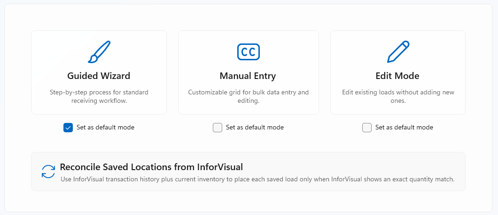
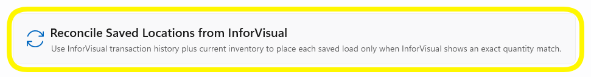

Choosing a Receiving Mode
When you open the Receiving module, the first screen lets you pick how you want to receive parts today. Each mode is designed for a different workflow. This page explains every option so you can pick the right one and get started fast.
Overview
The Mode Selection screen is the entry point for all receiving work. It shows three large mode cards and one utility action below them. Simply click the card for the mode you want to use — the app navigates to that workflow immediately.
{kind=link}

Mode Selection screen — click any card to enter that modeThe Three Modes
Each mode is designed for a specific type of receiving work:
Guided Wizard
The Guided Wizard is the recommended mode for most operators. It takes you through receiving one step at a time — PO lookup, part selection, quantity entry, and label printing — so nothing gets missed.
{kind=link}
{kind=link}
When to use it
- Receiving parts against a Purchase Order (most common)
- Receiving Non-PO items by Part ID
- Any time you are new to the receiving process
- Any time a Quality Hold part may be involved
Manual Entry
Manual Entry gives you a spreadsheet-style grid where you can type values directly into rows. This is faster when you have a large batch of line items and prefer to enter them all at once rather than going step-by-step.
{kind=link}
{kind=link}
When to use it
- Receiving many line items at once (bulk receiving)
- Correcting quantities on multiple lines quickly
- Users who prefer typing over wizard-style navigation
Edit Mode
Edit Mode opens existing receiving loads so you can make changes. It does not create new loads — it only lets you modify ones that have already been saved.
{kind=link}
{kind=link}
When to use it
- Fixing a quantity entered incorrectly earlier
- Updating a load that was partially received
- Reviewing and correcting loads before finalising
Setting a Default Mode
Each mode card has a Set as default mode checkbox directly beneath it. Checking this box saves your preference so the app remembers it the next time you log in.
Find the checkbox below your preferred mode card
The checkbox labelled "Set as default mode" sits directly below each mode button.
The app remembers your choice
Your default is saved per user account. Other operators logged into the same computer will keep their own default settings.
Reconcile Saved Locations from InforVisual
The Reconcile Saved Locations from InforVisual button runs a special process that checks each saved load against InforVisual's transaction history and current inventory.
{kind=link}

The Reconcile button spans the full width below the three mode cardsWhat does it do?
When quantities in InforVisual exactly match what is saved locally, the app automatically places the load and marks it as reconciled. Loads with mismatched quantities are left for you to review manually.
When to use it
- After a system outage that may have left loads in an unresolved state
- During end-of-shift reconciliation as directed by your warehouse manager
- When InforVisual and the app appear to show different quantities for the same PO